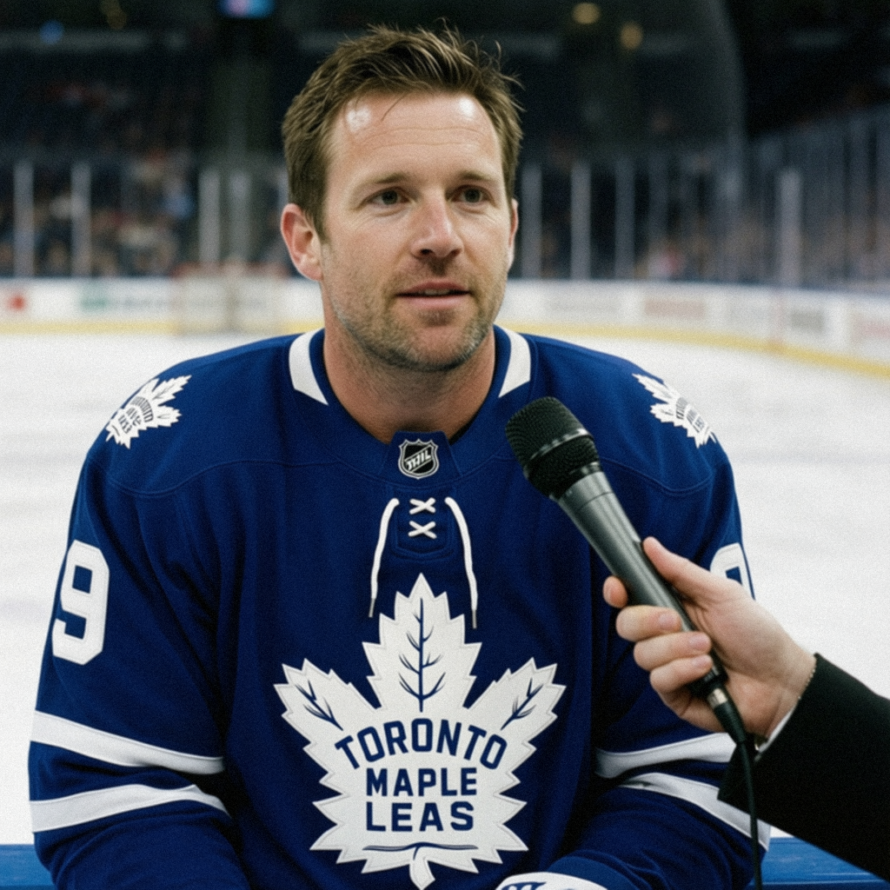

The few minutes, spent: Petr Chlup turns 11.6 into 11 goals
After an 8-6 game this Toronto team usually doesn't play, the 18-year-old center talks about making his limited shifts count.
 Marcus BellRinkside reporter · The Tunnel
Marcus BellRinkside reporter · The Tunnel
2:02 · synthetic voices, produced from the record · download
Petr Chlup81 scored once among two points in  Toronto Maple Leafs's 8-6 win over the Rangers on 2004-12-14. The 18-year-old center now has 11 goals in 19 games while averaging 11.6 minutes a night, and he joined
Toronto Maple Leafs's 8-6 win over the Rangers on 2004-12-14. The 18-year-old center now has 11 goals in 19 games while averaging 11.6 minutes a night, and he joined  Marian Gaborik95 and
Marian Gaborik95 and  Mats Sundin86 in a game that went nothing like Toronto's usual script.
Mats Sundin86 in a game that went nothing like Toronto's usual script.
Transcript
Marcus Bell here with Petr Chlup, the 18-year-old center, after a pretty unusual night for this hockey club. Eight-six, Petr. They put six on you guys. That's not how these nights usually go.
Yeah, it was, it was a weird one, you know. They kept coming, we kept answering, so. I'll take it. That's, that's the whole game right there, you know. We got one more than they did.
Your goal, the one you got, it felt like it happened fast. What did you see on that play?
Gaby, he, he drew two guys to him and I just, I found the soft spot, you know. He gave it to me and I got it off before the D could get across. One of those where you, you don't think, you just rip it. It's a fun game when it opens up like that.
You keep coming back to limited ice. Eleven goals in nineteen games, but you're out there just over eleven minutes a night. How do you make a short night produce like that?
You can't waste a shift, that's the thing. You get eleven, twelve minutes, so every one of them has to, you know, count. You don't float. You go to the net, you take the puck to space, and if the shot's there, you shoot it. Coach, he puts me out there with guys who make it easy. My job is, don't waste it.
When they got it to six, on the bench, what's the talk? Is it just, keep going?
Yeah, that's the talk. They're scoring, so we score. It's, it's not the kind of game we, we want to play every night, but when it goes like that, you, you can't sit back. You keep coming. Some nights the goalie's the story, some nights it's, it's just a track meet. Tonight was a track meet, and we ran it the best.
Eighteen years old, one of the youngest guys here, and you're putting up numbers on a team that hasn't lost in fifteen. What does that feel like from inside the room?
Ah, you don't, you don't think about the age, you know. In there, nobody cares how old you are. You make the play, you play. We just, we work, we win, and we do it again tomorrow. That's all it is. I'll be eighteen for another year, it's fine.
Petr Chlup, thanks for the time. Great night for you.
Yeah, thanks. Good win. Back to work. Appreciate it.